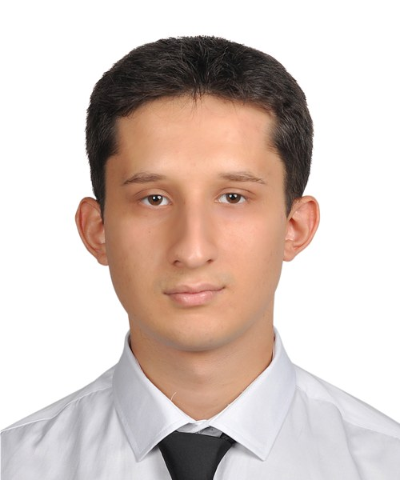
Engineering portfolio, 2026
Muhammet Mert Erdoğan
Mechanical engineer working on design, structural analysis and manufacturing. BSc Mechanical Engineering, thesis MSc in progress at Istanbul University-Cerrahpaşa. Certified SOLIDWORKS Professional (CSWP).
Muhammet Mert Erdoğan, mechanical engineer in Istanbul
Mert Erdoğan
I design parts in SolidWorks, check them in ANSYS and follow them onto the shop floor. BSc Mechanical Engineering, thesis MSc in progress, Certified SOLIDWORKS Professional.
Looking for design, analysis or manufacturing engineering roles. Available now, in Istanbul or open to relocation.
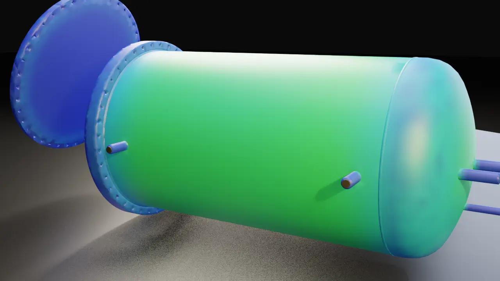
Projects
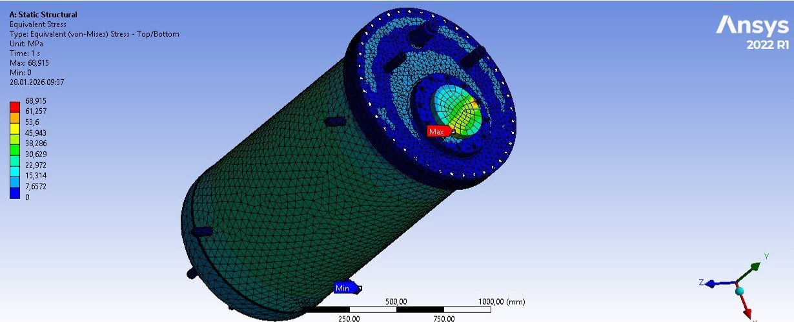
Structural analysis, individual, 2025 - 2026 Pressure vessel The head-flange zone sets the margin: safety factor 3.05 at the head against 11.2 in the shell. My part: hand calculation, FE model and its interpretation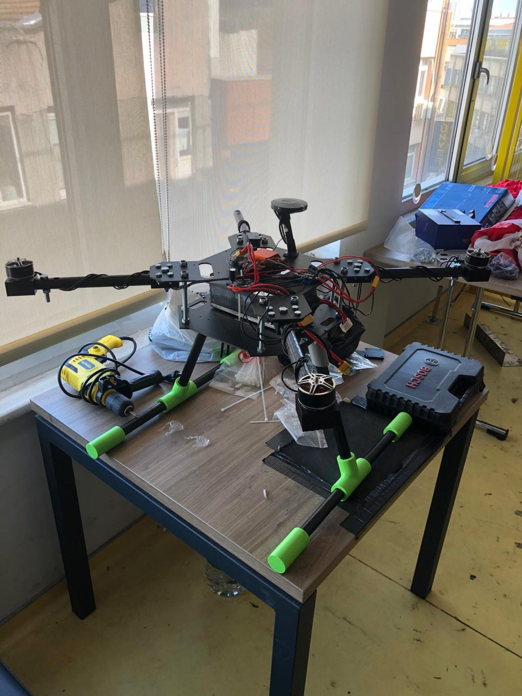
Design and manufacturing, team, 2024 - 2025 UAV landing gear Skid landing gear for a 7 kg quadcopter, 50% under the weight target, built and flown. My part: the landing gear, from CAD to printed parts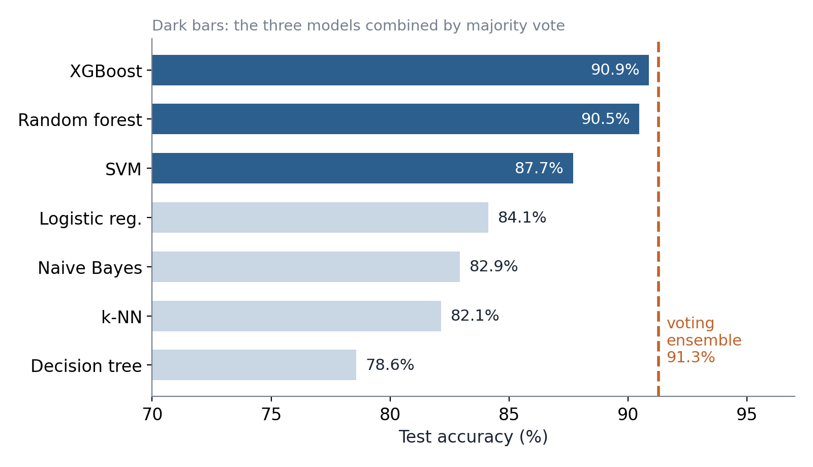
Machine learning, individual, 2025 Steel plate defects Seven classifiers compared, a voting ensemble names the fault type with 91.3% accuracy. My part: all of it, in R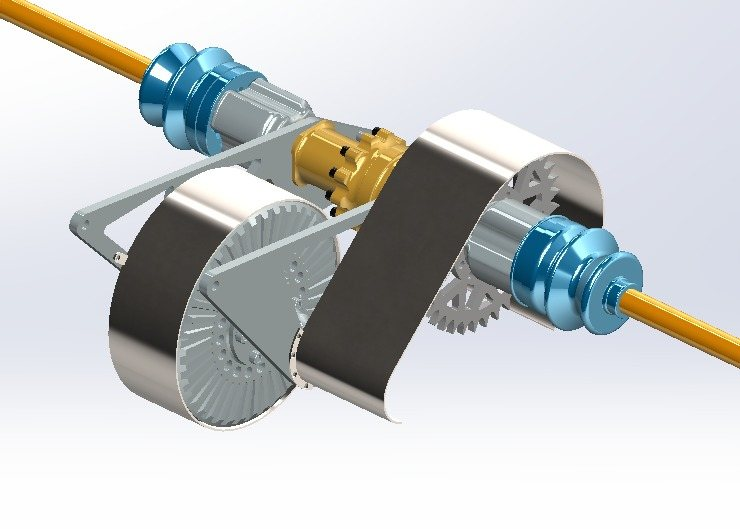
Formula Student, team, 2023 - 2026 Chain guard Designed in SolidWorks, checked in ANSYS, bracket revised for 15% less weight. My part: chain guard and bracketFrom the ANSYS model
Scroll: the bolted head lifts off, then the surface takes the colours of the von Mises result.
Rendered in Blender from the mesh and results of my ANSYS model.
Structural analysis
Stress analysis of a pressure vessel
I calculated the stresses of a pressure vessel by hand, built an ANSYS model of the vessel and its bolted head and showed that the head-flange region, not the shell, sets the safety margin.
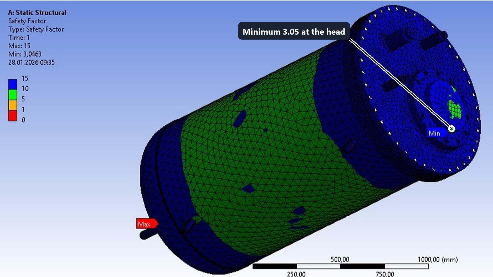
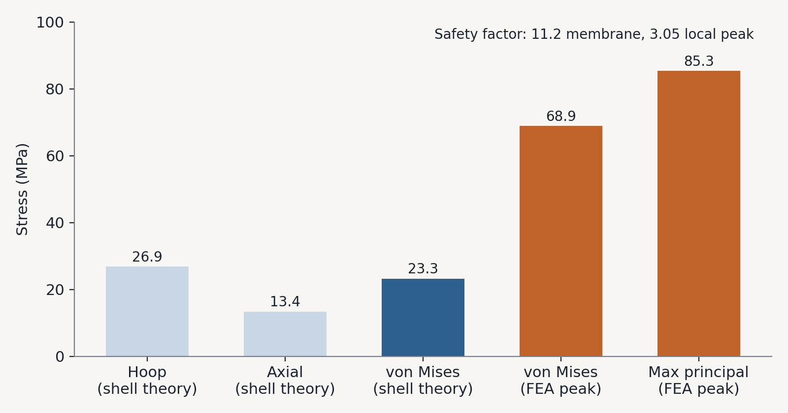
Method and details
Pressure vessel
Method
- 1. Hand calculationHoop, axial and von Mises stress, radial growth
- 2. FEA modelVessel and bolted head, linear static, refined mesh
- 3. Two-level checkMembrane vs theory, peaks at discontinuities
- 4. ConsequenceStored energy, TNT equivalent, safety distance
Problem
Shell r = 450 mm, t = 10 mm, head 12 mm, L = 1600 mm, SA-516 Gr.70 (yield 260 MPa), internal pressure 0.597 MPa.
What I did
- Calculated the shell stresses with thin-wall theory: von Mises 23.3 MPa, radial growth 0.051 mm.
- Modelled the vessel and bolted head in ANSYS Mechanical with mesh refinement at the flange and head.
- Compared theory with the shell membrane and read the FEA peaks as bending at discontinuities, instead of forcing one number onto both.
- Extended the study with stored energy (isentropic gas), TNT equivalent and Hopkinson-Cranz blast distances. Article in preparation.
What I would do next
A mesh independence study at the peak and a minimum-constraint support instead of the fixed base.
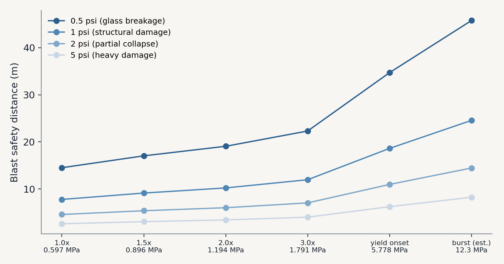
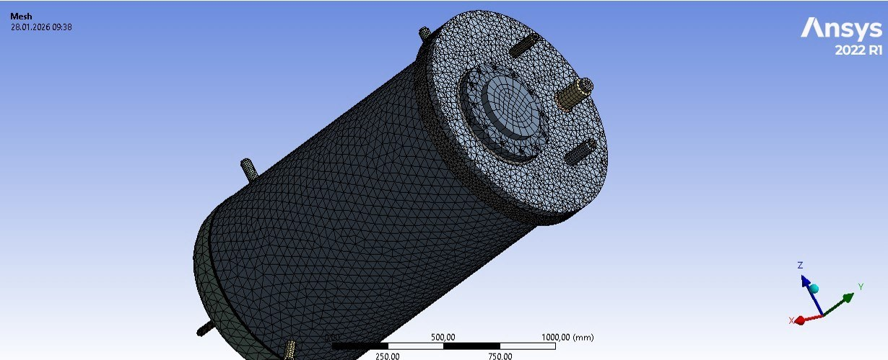
Design and manufacturing
Landing gear for a TEKNOFEST quadcopter
For a 7 kg quadcopter I designed a skid landing gear from carbon-fibre tubes and 3D-printed joints, checked it with static FEA and brought it in 50% below the specification weight target.
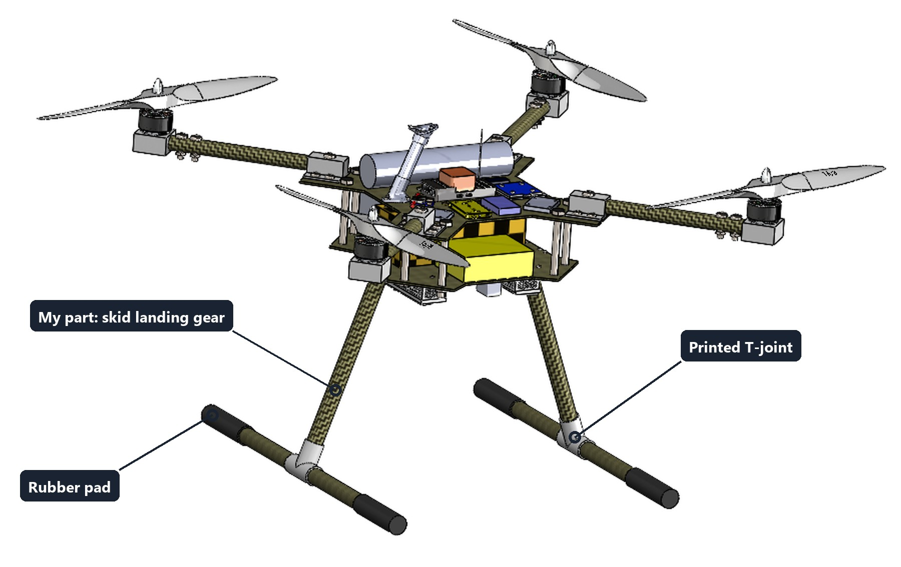
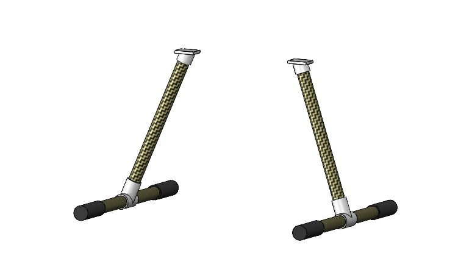
Method and details
TEKNOFEST landing gear
Design decisions
- 1. Requirements7 kg take-off mass, camera clearance, hard landings
- 2. Parametric CADSkid legs, T-joints and flanges in SolidWorks
- 3. Static FEALanding loads on the gear in ANSYS
- 4. BuildCarbon tubes, FDM joints in PLA, ABS and ASA
Design decisions
- Skid gear instead of arm-mounted legs: out of the camera's view and spreads the landing load over a larger area.
- Carbon-fibre tubes with a 5 mm wall on the legs, thicker than the arms, from a local manufacturer.
- 3D-printed T-joints and angled flanges in ABS for strength-to-weight and easy printing.
- Rubber pads on the skids to soften the landing shock.
- Bolted to the frame like the other parts, for easy assembly.
Skills
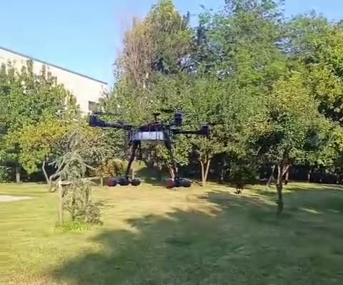
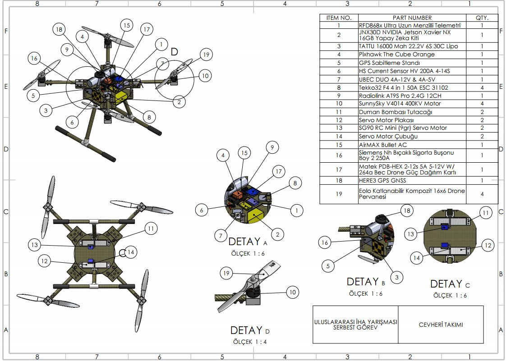
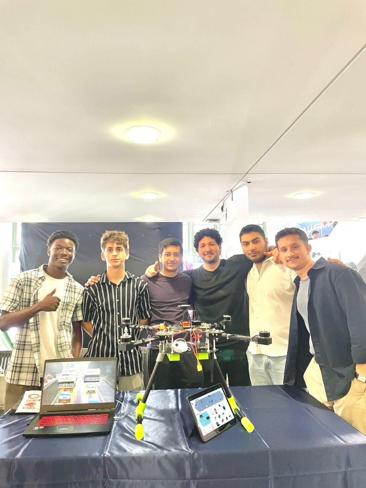
Machine learning
Steel plate defect classification
I compared seven classifiers on steel plate inspection data and combined the best three into a voting ensemble that identifies the fault type with 91.3% accuracy.
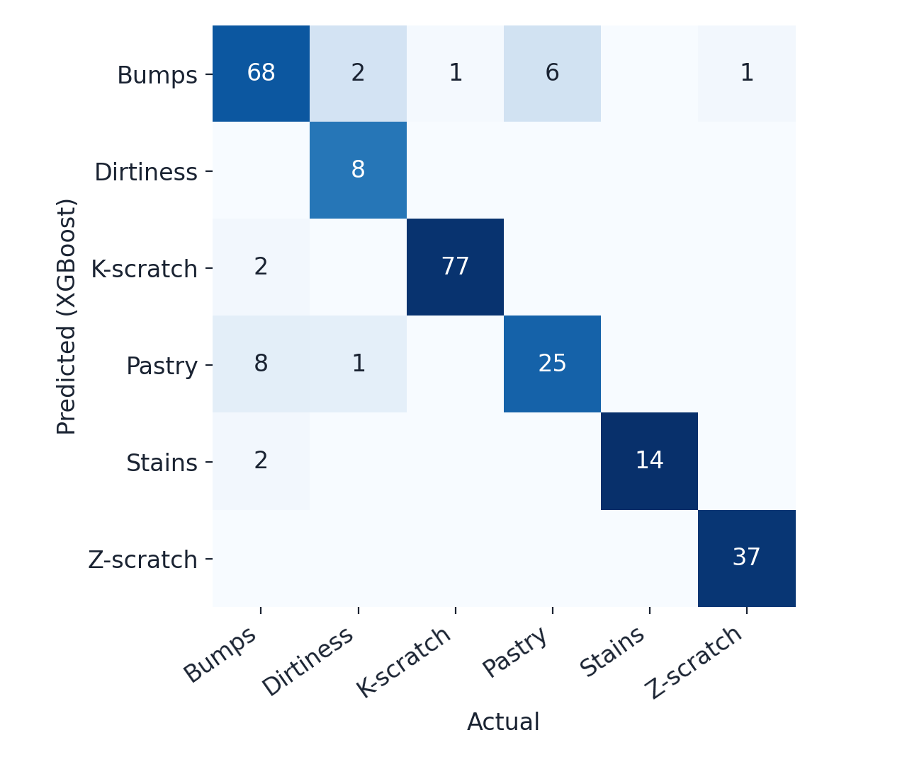
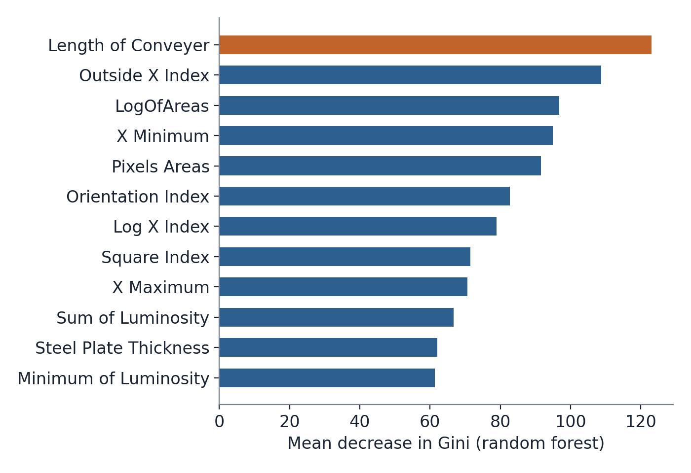
Method and details
Steel plate defects
Method
- 1. DataUCI Steel Plates Faults, 27 features per plate
- 2. Preparation80/20 split, scaling, oversampling, Boruta selection
- 3. Seven modelsFrom logistic regression to XGBoost
- 4. EnsembleMajority vote of XGBoost, random forest and SVM
What I did
- Cleaned the data, left out the ambiguous "other faults" class and balanced the minority classes by oversampling.
- Selected the informative features with Boruta.
- Compared logistic regression, decision tree, random forest, k-NN, naive Bayes, SVM (5-fold CV for C) and XGBoost.
- Combined XGBoost (91%), random forest (90%) and SVM (88%) by majority vote: 91.3%, precision 0.909, recall 0.891.
What it says about the process
K-scratch, Z-scratch and stains are recognised almost perfectly. The pair the model mixes up most is bumps and pastry. Conveyor length ranks highest, so the model leans on line and plate geometry measurements, and the fault mix differs clearly between the two steel grades.
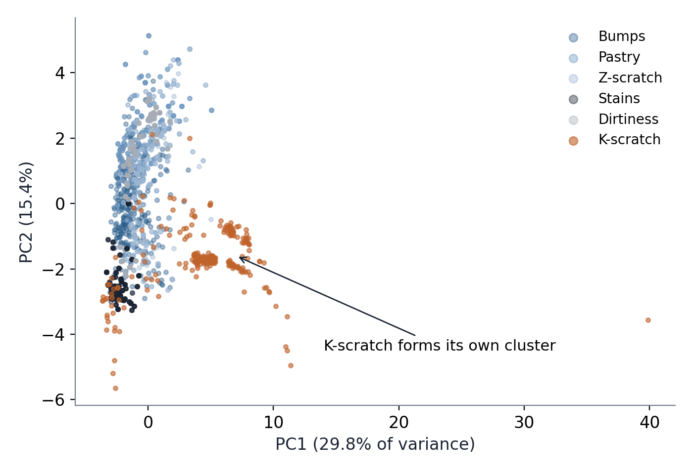
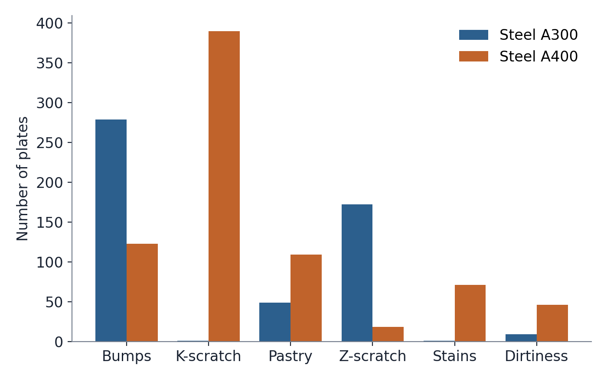
More work
Formula Student
İÜC Racing Formula Student, powertrain team, 2023 - 2026
Designed the chain guard in SolidWorks and verified its strength with static analysis in ANSYS. Revised the bracket design for a 15% weight reduction.
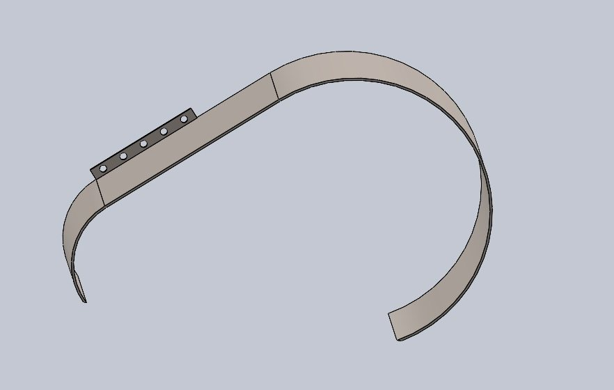
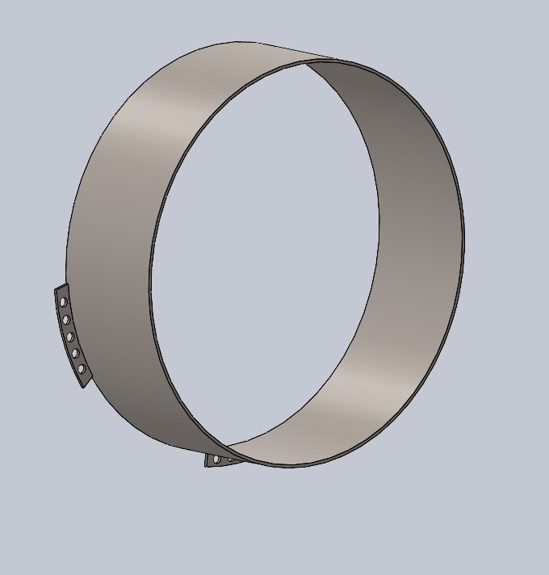
Internships
- FESTO, 2025: traced mechanical, pneumatic, electrical and software faults in a robotic system and recommissioned it.
- BEKO, manufacturing, 2025: found loss sources at 5 critical assembly stations and proposed 2 improvements.
- Midas Makina, design, 2024: revised SolidWorks models and prepared manufacturing drawings.
- Yılmaz Redüktör, workshop, 2024: machining, heat treatment and gear quality control on site.
Skills
SolidWorks (CSWP), ANSYS Mechanical, AutoCAD, Siemens NX, CATIA, Fusion 360, MATLAB/Simulink, R, MS Excel. Static and modal FEA, topology optimisation, GD&T, design for manufacturability, injection moulding and sheet metal design, root cause analysis, lean manufacturing.
Contact
mmert1erdogan@gmail.com
linkedin.com/in/mmerterdogan
mmerterdogan.github.io
Experience
Internships, school and leadership, newest first. The projects are above.
-
Oct 2026CSWP
Certified SOLIDWORKS Professional
Dassault Systèmes
SolidWorks -
Sep 2026 - present
MSc in Mechanical Engineering (Thesis)
Istanbul University-Cerrahpaşa
-
Aug - Sep 2025
Intern
FESTO Industrial automation
Traced mechanical, pneumatic, electrical and software faults in an out-of-service robotic system through root cause analysis and recommissioned it.
Root cause analysisPneumaticsCommissioning -
Jul - Aug 2025
Manufacturing Intern
BEKO Home appliances
Found loss sources at 5 critical assembly line stations through waste and root cause analysis and proposed 2 improvements with R&D and Production.
Lean manufacturingRoot cause analysisAssembly lines -
Aug 2024 - Aug 2025
Chair of the Board
İÜC Career Club 300+ members
Planned the year of the club and delivered 8+ events.
Leadership -
Aug - Sep 2024M
Design Intern
Midas Makina Sanayi Machinery
Revised 3D models of existing parts in SolidWorks and prepared manufacturing drawings to dimensioning and tolerancing standards.
SolidWorksTechnical drawingTolerancing -
Jul 2024YR
Workshop Intern
Yılmaz Redüktör Gearboxes
Observed CNC turning, milling, heat treatment and grinding operations and gear quality control on a gearbox production line.
CNC machiningHeat treatmentQuality control -
Sep 2021 - Jul 2026
BSc in Mechanical Engineering
Istanbul University-Cerrahpaşa 30% English-medium
Company and university logos are trademarks of their owners, shown only to identify where I studied and worked.
About
I trust a result once two different routes agree on it, and I want to understand why they disagree when they don't. A design is not finished for me until I know how it will be built.
I am doing a thesis MSc at İÜC, which takes one day a week. The rest of the week is free for full-time work.
- Now
- MSc (Thesis), İÜC, 2026 -
- Languages
- Turkish, English (C1)
- Based in
- Istanbul, open to relocation
Skills and certifications
Design
- SolidWorks CSWP
- AutoCAD
- Siemens NX
- CATIA
- Fusion 360
Analysis
- ANSYS Mechanical
- Static and modal FEA
- Topology optimisation
- MATLAB / Simulink
Manufacturing and data
- Design for manufacturability
- Root cause analysis
- Lean manufacturing
- R, MS Excel
Certifications and training
- CSWP - Certified SOLIDWORKS Professional (Oct 2026)
- UAV Design and Build Training - TEİ Aviation Engine Schools
- McKinsey & Company Forward Program
Languages
- Turkish (native)
- English (C1)